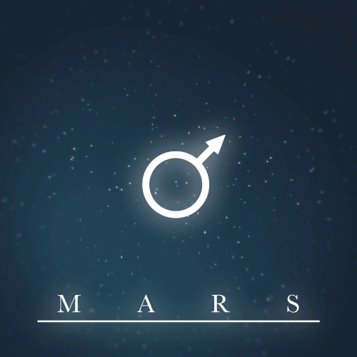
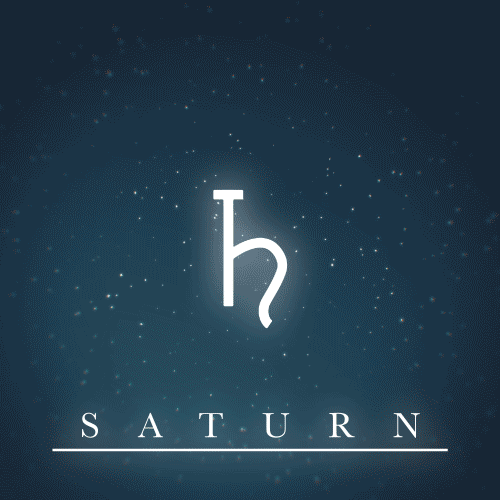
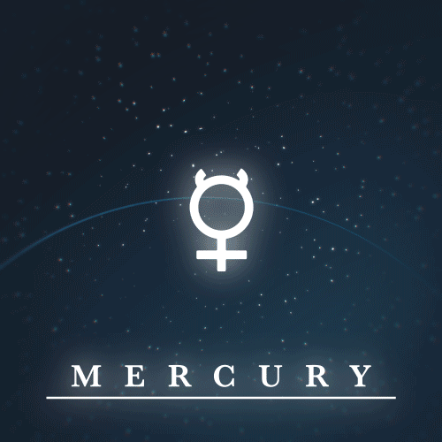
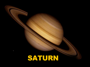

A Solar System Beyond Earth
EMERGENCY BROADCAST ALERT:
A Hyperbolic asteroid has just grazed earth's orbit at an alarming 25.5 kilometres per second
The very first interstellar encounter of our time. This Asteroid apears to be from another Solar
System and due to the circumstances scientists have taken precautionary measures and extensive
research is being conducted for our interstellar travels. We have limited time to choose our next
planet. It is up to you to review the following research, the world is counting on you.
SUIT UP! and May God Speed.




Planets Under Consideration
| Planet Body |
Mass (kg) |
Diameter (km) |
Mean Density (kg/m3) |
Escape Velocity (m/s) |
Avg. Dist. from the Sun |
Rotation Period |
Revolution Period |
 |
6.42x1023 |
6787 |
3940 |
5000 |
1.524 AU (227,936,640 km) |
1.026 |
686.98 |
|  |
5.69x1026 |
120660 |
690 |
35600 |
9.537 AU (1,426,725,400 km) |
0.44 (10.2 earth hours) |
29.46 |
 |
3.3x1023 |
4879.4 |
5420 |
4300 |
0.387 AU (57,909,175 km) |
58.65 |
87.97 |
 |
1.02x1026 |
49528 |
1640 |
23300 |
30.07 AU (4,498,252,900 km) |
0.67 (19.1 hours) |
60,190 (164.8 Earth years) |
MARS-FACT #1
Like Earth, Mars has tempatured seasons but because of it's high eleptical orbit it goes thru colder
winters and hotter summers. The average tempature is -80 degrees to 70 degrees F.
MARS-FACT #2
1 year on mars will be nearly double what we experience on Earth, about 1.88 years and 1 day will be
24 hours and 40 minutes. Sending messages back to earth will take 15 minutes
MARS-FACT #3
Mars has no magnetic field or thick atmosphere to protect us from the suns radiation and Mars also
has frequent dust storms.
SATURN-FACT #1
Saturn has no surface to land or walk on, you would actually float continuously once you reach a
certain point considering your suit is heat resistant to about 10,000 degrees celsius.
SATURN-FACT #2
Gravity on Saturn is 107% Earths surface gravity, A 100lb person would weight 107lbs. In the long run
if you make it back to earth you would be stronger but shorter but wouldn't feel the difference on
saturn.
SATURN-FACT #3
The point at which you float is a body of Liquid Hydrogen Metal that has the same density as your body
which allows you to float. This Liquid Hydrogen Metal is mirror like and reflects light so diving into
it will be like swimming in a liquid mirror like that Matrix scene.
MERCURY-FACT #1
Gravity is significantly lower on Mercury, about 0.38% Earths surface gravity. So If you where trying
to lose weight then a 200lb person would now be 76lbs. Might as well try out for the NBA and bring the
Bulls a championship.
MERCURY-FACT #2
Mercury has no atmosphere and because of that you won't experience any type of weather disasters but
is still prone to earthquakes additionally the sky will be black and not blue.
MERCURY-FACT #3
One day on Mercury will last 59 Earth Days but one year will span 88 Earth Days. This is because of a
spin-orbit resonance of 3:2. Mercury makes three full rotations on its axis for every two orbits
it makes around the Sun.
NEPTUNE-FACT #1
A typical Neptune day is about 16 hours long but travel into more central regions of the planet and
you will experience 18 hour days, Technically I guess that's time travel.
NEPTUNE-FACT #2
Forecast on Neptune is a typical frigid -330 F day and night with icy rain like conditions and winds
as fast as 1500 MPH so try not to catch a breeze unless you plan to get away Southwest Airlines style.
NEPTUNE-FACT #3
Neptune is 60 to 70% ice because of it's lack of energy from the sun and has thin rings around the
planet but for being so icy you'd expect it to be solid ice but the core is actually hotter than the
suns surface.